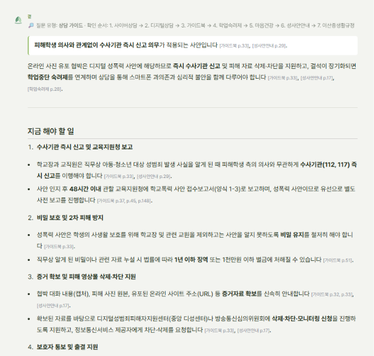
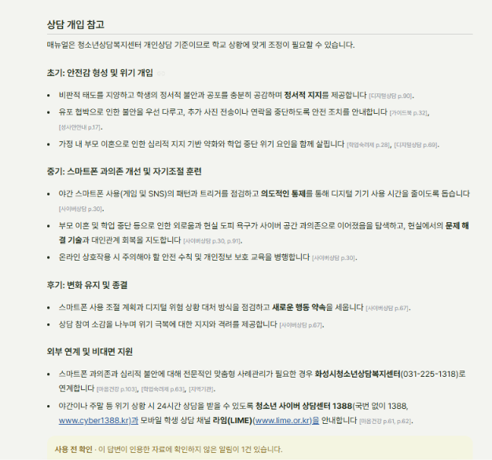
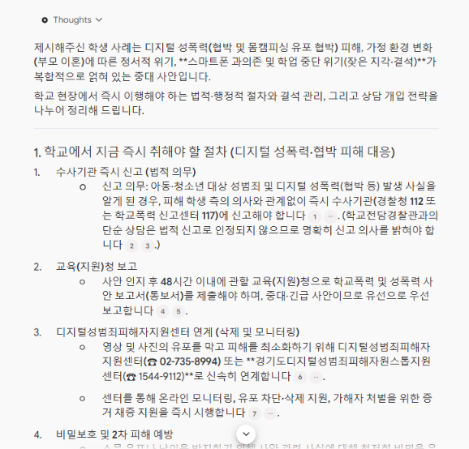
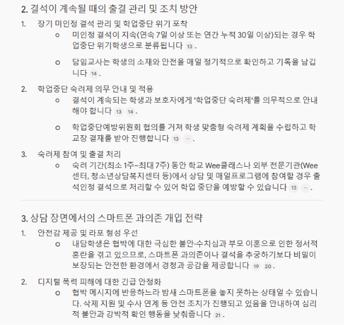
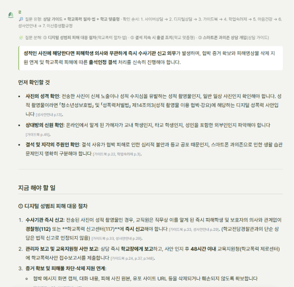
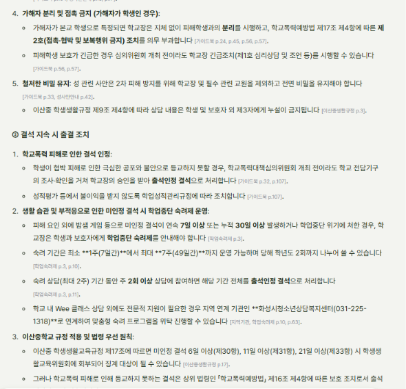
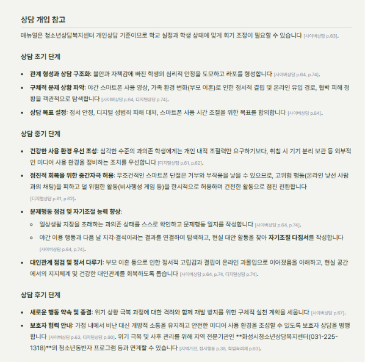
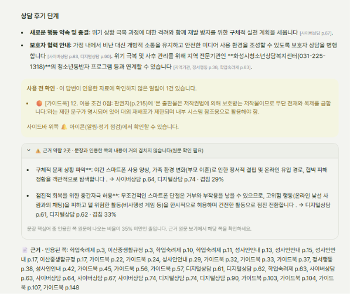

사례 1 답변 비교: 곁 vs Gemini 노트북
Wee 희망대상 우수사례집 #11 「통제가 아닌 공감의 상담」 응용 · 스마트폰 과의존 + 온라인 협박 + 결석 + 가정 변화
질문
중학교 1학년 남학생이 최근 2주 동안 지각과 결석이 잦아 담임 의뢰로 상담실에 왔어요. 밤새 스마트폰 게임과 SNS를 하느라 아침에 못 일어나고, 학원도 그만뒀대요. 상담 중에 온라인에서 알게 된 사람에게 사진을 보냈는데 '학교에 퍼뜨리겠다'는 협박 메시지를 받고 있다고 털어놨어요. 부모님은 최근 이혼하셨고요. 학교에서 지금 해야 할 절차와 결석이 계속될 때의 조치, 그리고 상담에서 스마트폰 과의존을 어떻게 다루면 좋을지 알려주세요.
질문 분해(유형별)
| # | 질문 속 표현 | 유형 | 찾아야 할 근거(지금 등록 자료 기준) |
|---|---|---|---|
| ① | 밤새 스마트폰 게임과 SNS를 하느라 아침에 못 일어나고 | 스마트폰 과의존 | 디지털상담 과의존 유형·특성(p.87, 97), 회복 개입·중간자극(p.61–63) |
| ② | 온라인에서 알게 된 사람에게 사진을 보냈는데 '학교에 퍼뜨리겠다'는 협박 | 사이버 폭력(성격 확인 필요) | 가이드북 사이버폭력 증거·삭제(p.32–33) · 성적 사진이면 성범죄 신고 의무(가이드북 p.33, 37 / 성사안안내 p.29) · 디성센터 연락처·삭제 지원(성사안안내 p.14–17) |
| ③ | 부모님은 최근 이혼하셨고요 | 가정 환경 | 보호자 상담(사이버상담 부록), 기저 스트레스 탐색(디지털상담 p.87), 지역 기관 연계 |
| ④ | 학교에서 지금 해야 할 절차와 결석이 계속될 때의 조치 | 절차(법령) | 신고 접수·48시간 보고·양식1-3(가이드북 p.24, 37, 148) · 미인정 결석 → 숙려제 대상·안내 의무(학업숙려제 p.3, 28), 출결 처리(p.11) · 이산중 미인정 결석 규정(이산중 p.16–17) |
| ⑤ | 상담에서 스마트폰 과의존을 어떻게 다루면 좋을지 | 상담 개입 | 디지털상담 p.61–63, 87, 97 · 회기 구성(사이버상담 p.61–67) |
원하는 답변 및 참고 자료(정답 기준)
- 증거 확보와 삭제·차단 요청, 신고 접수, 48시간 이내 교육지원청 보고 → [가이드북 p.24, 33, 148] ✅
- 피해로 인한 결석의 출석 인정 → [가이드북 p.107], 이산중 미인정 결석 규정 → [이산중 p.16–17] ✅
- 과의존 상담: 사용 목적과 패턴 구분, 이혼 같은 기저 스트레스 탐색 → [디지털상담 p.87, 97], 회기 구성 → [사이버상담 p.61–67] ✅
- 연계: 화성시청소년상담복지센터 ✅
- ⚠️ 조심할 점: "사진"을 성범죄로 단정하고 "수사기관 즉시 신고 의무"를 맨 앞에 쓰면 안 된다. 질문에는 어떤 사진인지 나와 있지 않으므로, 사진 내용에 따라 사이버폭력과 성폭력이 갈린다고 확인을 권해야 맞다.
[곁 답변]
| 분해 | 답변 내용 | 근거 대조 | 판정 |
|---|---|---|---|
| ② | 첫 줄부터 "디지털 성폭력 사안에 해당 → 수사기관 즉시 신고 의무"로 단정 | 신고 의무 문장 자체는 가이드북 p.33·성사안안내 p.29와 일치. 하지만 사진 성격 확인 없음 | 단정 |
| ②④ | 48시간 보고 + 성폭력 유선 별도 보고 + 양식1-3, 비밀 유지와 누설 처벌(1년 이하 징역) | 가이드북 p.37, 45, 148, 51과 일치 | 정확 |
| ② | 증거 목록(협박 대화 캡처·원본·URL), 디성센터·방송통신심의위원회 삭제·차단·모니터링 신청 | 가이드북 p.32–33, 성사안안내 p.17과 일치. 연락처(p.14–16)는 빠짐 | 정확 |
| ④ | 피해로 등교 못 하면 출석인정 결석 / 미인정 결석 지속 시 숙려제 안내·위원회 협의 / 숙려 상담 출결 | p.107은 학교폭력 피해 결석에만 해당 → 지금 결석(밤샘 사용)과 섞음. 숙려제 p.28, 11은 정확. 연속 7일·누적 30일 기준 없음 | 일부 |
| ③ | 이혼으로 인한 지지 기반 약화 탐색 | [디지털상담 p.69]는 디지털 폭력 개입 인터뷰, 이혼 언급 없음 | 근거 불일치 |
| ⑤ | 야간 사용 패턴·트리거 점검, 의도적 통제, 문제 해결 기술·대인관계 회복 | [사이버상담 p.30]은 해외 프로그램 문헌 고찰, [p.91]은 설문지. 과의존 개입 쪽(디지털상담 p.61–63, 87, 97) 못 찾음 | 근거 불일치 |
| ⑤ | 후기: 새로운 행동 약속, 소감 나누기 | 사이버상담 p.67과 일치(가해 청소년용 매뉴얼이라 대상은 다름) | 일부 |
| ③⑤ | 화성시청소년상담복지센터, 청소년 사이버상담센터 1388, 라임(LIME) | 지역기관·마음건강 p.61–62와 일치 | 정확 |


[Gemini 노트북 답변]
| 분해 | 답변 내용 | 근거 대조(곁 저장소에서 확인) | 판정 |
|---|---|---|---|
| ② | "디지털 성폭력(협박 및 몸캠피싱 유포 협박)"으로 단정 | 몸캠피싱 분류는 디지털상담 p.40, 49–51에 있음. 하지만 질문만으로 단정할 수 없음 | 단정 |
| ②④ | 수사기관 즉시 신고, SPO 상담은 신고 아님, 48시간 보고·유선 우선 보고 | 가이드북 p.33, 37과 일치. 보고서 이름("사안 보고서(통보서)")은 모호, 양식 번호 없음 | 정확 |
| ② | 디성센터 02-735-8994, 경기도 원스톱 1544-9112, 모니터링·삭제·채증 지원 | 성사안안내 p.14–16, 17과 일치 | 정확 |
| ② | 비밀 유지, 외부 소통 창구 일원화 | 성사안안내 p.24와 일치 | 정확 |
| ④ | 미인정 결석 연속 7일·누적 30일 → 위기학생, 숙려제 의무 안내, 위원회 협의, 1~7주 출석인정 | 학업숙려제 p.3, 7, 28과 일치 | 정확 |
| ④ | 담임교사가 소재·안전을 매일 확인 | 매뉴얼에는 숙려제 참여 학생 "최소 주 1회" 정기 확인 | 틀림 |
| ③⑤ | 안전감·라포 우선, 협박 때문에 폰을 못 놓는 강박적 확인 행동 완화, 이혼 고통·외로움 회피 탐색 | 강박관념(디지털상담 p.19), 본질적 욕구 탐색은 자료에 없는 일반 상담 지식 | 일부 |
| ⑤ | 중간자극으로 점진적 조절, 수면 위생·일상 기능 회복, 보호자 상담 병행 | 중간자극은 디지털상담 p.61–63과 일치 | 정확 |
| ③ | 지역 연계 | Wee 클래스·Wee센터만. 화성시 센터·1388 없음 | 부족 |


최종 비교 분석
| 항목(분해) | 곁 | 노트북 | 우세 |
|---|---|---|---|
| ② 사진 성격 판단 | 성폭력 단정 | 몸캠피싱 단정 | 둘 다 부족 |
| ② 신고·보고 절차 | 48시간+유선+양식1-3, 누설 처벌 | 48시간+유선, 양식 없음 | 곁 |
| ② 증거·삭제 지원 | 증거 목록, 신청 절차 | 디성센터 연락처 2개 | 비슷 |
| ④ 결석 조치 | 숙려제 정확, 피해 결석과 섞음 | 7일·30일 기준 명확(소재 확인 빈도는 틀림) | 노트북 |
| ⑤ 과의존 상담 | 엉뚱한 쪽 인용, 핵심 개입 못 찾음 | 중간자극, 강박적 확인, 수면·일상 회복 | 노트북 |
| ③ 가정·연계 | 화성시 센터·1388·라임 | 보호자 상담은 있음, 지역 기관 없음 | 곁 |
| 근거 확인 | 문장마다 [자료 p.쪽], 원문·쪽 이미지, 사용 전 알림 | 번호 각주 | 곁 |
차이가 난 이유
- 노트북은 문서 전체를, 곁은 검색한 일부만 본다. 요청이 여러 개인 복합 질문에서 차이가 커진다.
- 곁의 검색어 5개에 "과의존"이 없어 디지털상담 p.61–63, 87, 97을 아예 가져오지 못했다.
- 질문 유형을 하나("상담 가이드")로만 정해 가해 청소년용 사이버상담 매뉴얼이 1순위가 됐다.
- 새로 추가한 자료(성사안안내 등)는 질문당 최대 5개 청크만 가져와 연락처 쪽(p.14–16)이 빠졌다.
보완할 방향
- 질문 분해: 질문을 요청 단위(과의존 / 사이버폭력 / 가정 환경 / 절차 / 상담 개입)로 나누고, 조각마다 유형을 붙인다. 화면에 분해 결과를 보여 준다.
- 조각별 검색: 조각마다 검색어를 만들고, 조각 유형들의 확인 순서를 합쳐 검색한다(복합 질문 = 유형 여러 개).
- 주제가 맞는 추가 자료의 검색 몫 늘리기: 질문 주제와 자료 주제가 겹치면 최대 5개 → 9개 청크.
- 단정 금지 규칙: 사진·가해자·상황의 성격이 불분명하면 경우를 나눠 안내하고, 먼저 확인할 것을 쓴다. 성적 사진일 가능성은 신고 의무와 함께 조건부로 쓴다.
- 조각별 답변 구성: 답변을 분해한 조각 순서대로 쓰고, 조각마다 근거를 단다(결석 원인 혼동 방지: 피해 결석과 미인정 결석을 구분).
- 인용 검증: 문장과 인용 쪽의 내용 겹침이 매우 낮으면 "근거 약함"으로 표시한다(p.30, p.91 같은 경우를 걸러냄).
보완 후 재시험 (곁 v11)




정답 기준 대조(원문 확인)
| 분해 | 보완 후 답변 | 근거 대조 | 판정 |
|---|---|---|---|
| ② | "먼저 확인할 것": 사진의 성격(성적 촬영물이면 「성폭력처벌법」 제14조의3 촬영물 이용 협박), 상대방 신원, 결석 원인 구분 → 성범죄일 때만 즉시 신고 의무 | 성사안안내 p.13(제14조의3), 가이드북 p.33·성사안안내 p.29 일치 | 해결 |
| ②④ | 48시간 보고(학교폭력 제로센터), 양식, 증거 확보, 디성센터 02-735-8994·경기 1544-9112·방송통신심의위원회 1377 | 가이드북 p.24·37·148, 성사안안내 p.15·17 일치(1377은 p.15에 있음, 함께 단 가이드북 p.104에는 없음) | 정확 |
| ② | 가해자가 학생이면 분리·제2호 조치·긴급조치, 비밀 유지 + 이산중 제9조 4항 | 가이드북 p.45·56·57, 성사안안내 p.42, 이산중 p.3 일치 | 정확 |
| ④ | 피해 결석 → 출석 인정 / 생활 습관 미인정 결석 → 연속 7일·누적 30일 숙려제 안내, 1~7주, 숙려 상담 출석 인정 / 이산중 미인정 결석 6·11·21일 단계 / 법령 우선 | 가이드북 p.107, 학업숙려제 p.3·10·11, 이산중 p.17 일치 | 해결 |
| ⑤ | 환경 조성 우선, 중간자극 점진 전환, 문제행동 일지·자기조절 다짐서, 초기 관계형성·구조화·문제 상황 파악 | 디지털상담 p.61–62, 사이버상담 p.64·74 일치 | 해결 |
| ③ | 이혼에 따른 정서적 고립이 온라인 과몰입으로 이어졌는지 탐색, 보호자 협력, 화성시 센터 청소년동반자 연계 | 디지털상담 p.74(가족 문제), 정서행동 p.38(청소년동반자) 일치 | 정확 |
| 표시 | 근거 약함 2곳: 사이버상담 p.64(29%), 디지털상담 p.61–62(33%) | 두 곳 모두 실제로는 맞는 인용. PDF 글자가 띄어쓰기 없이 붙어 있어("문제상황파악") 단어 비교가 놓침 | 오탐 |
세 답변 비교
| 항목 | 곁 보완 전 | 곁 보완 후 | 노트북 |
|---|---|---|---|
| ② 사진 성격 판단 | 단정 | 먼저 확인 + 경우별 | 몸캠피싱 단정 |
| ② 신고·보고·증거·삭제 | 정확 연락처 없음 | 정확 연락처 3개·법 조항 | 정확 연락처 2개, 양식 없음 |
| ④ 결석 조치 | 피해 결석과 섞음 | 원인별 분리 + 7일·30일 + 이산중 단계 | 7일·30일 소재 확인 빈도 틀림 |
| ⑤ 과의존 상담 | 근거 불일치 | 중간자극·환경·회기 활동 | 중간자극·수면·강박적 확인 |
| ③ 가정·연계 | 화성시 센터 | 화성시 센터·청소년동반자 | 지역 기관 없음 |
| 근거 확인 | 쪽 근거, 엉뚱한 인용 섞임 | 쪽 근거 32쪽, 근거 약함 표시(오탐 2) | 번호 각주 |
| 답변 시간 | 약 46초 | 약 70~75초 | - |
결론: 보완 후 곁은 정답 기준 5개 항목과 "단정 금지"를 모두 충족해, 같은 질문에서 노트북보다 낫다(판단 조건 처리, 결석 원인 분리, 이산중 규정·지역 연계, 쪽 근거). 노트북에만 있던 "협박 때문에 폰을 계속 확인하는 강박적 행동"이라는 관점은 아직 없다.
남은 과제
- 근거 약함 오탐 줄이기: 띄어쓰기가 없는 PDF 글자에도 맞도록 단어 대신 글자 묶음(2~3글자)으로 겹침을 잰다.
- 답변 시간(약 70초): 조각별 검색어 임베딩을 한 번에 묶고, 조각 검색을 동시에 돌린다.
- 이산중 규정 등록 위치: 지금 추가 자료 [이산중생활규정](연도 2019로 저장)이라 학교 맞춤형 1순위가 아니다 → 기본 자리 [이산중]으로 다시 등록, 연도 2026.
- 평가 세트 정리: Q11 기대 답("자해·자살 상담 방법은 확인되지 않음")은 마음건강 가이드북 등록으로 낡음 → 새 기대 답으로. Q6·Q14 하락은 한 번 더 돌려 편차인지 확인.